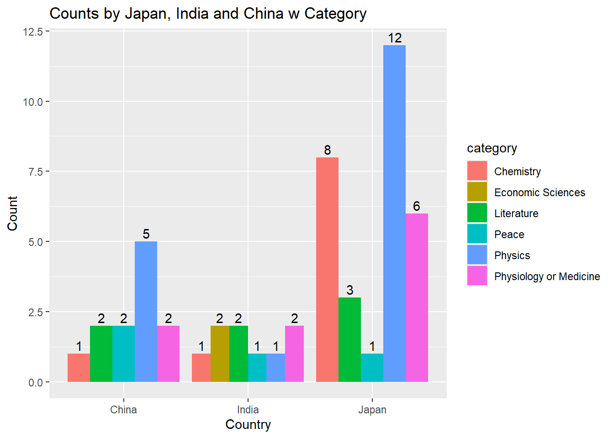
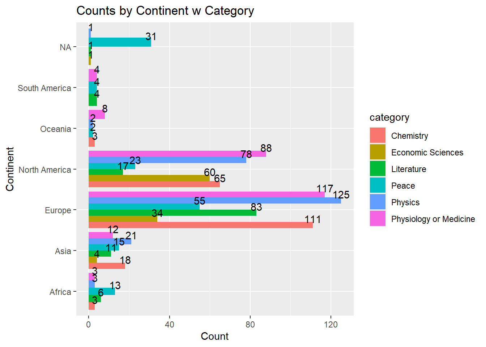

The Nobel Prize organization provides public APIs for accessing structured Nobel Prize data.
Using one or both of the APIs available at the Nobel Prize Developer Zone, your task is to use JSON data to investigate and answer four interesting, data-driven questions.
At least one of your questions should go beyond simple counts and require joining, filtering, or comparing fields across the data (e.g., “Which country lost the most Nobel laureates—born there but awarded as a citizen of another country?”).
Requirements
Use one or both Nobel Prize APIs to retrieve data in JSON format.
In R, load and transform the JSON data into tidy data frames.
Formulate four questions that can be answered from the data.
For each question:
Describe the question
Show the code used
Present the answer (table, summary, or plot)
Deliverables
Submit a single Quarto (.qmd) file that includes:
Your four questions
All R code used to retrieve and process the data
The resulting answers
You may complete this assignment individually or in a small group.
The Nobel Prize API link
https://api.nobelprize.org/2.1/laureates
https://api.nobelprize.org/2.1/nobelPrizes
library(httr)library(jsonlite)library(dplyr)
Attaching package: 'dplyr'
The following objects are masked from 'package:stats':
filter, lag
The following objects are masked from 'package:base':
intersect, setdiff, setequal, union
Q3 Which categories were Japan, India, and China awarded in?
df_combined_nobel %>%filter(birth_country %in%c("Japan", "China", "India")) %>%count(birth_country, category) %>%ggplot(aes(x = birth_country, y = n, fill = category)) +geom_col(position ="dodge") +geom_text(aes(label = n),position =position_dodge(width =0.9),vjust =-0.3) +labs(title ="Counts by Japan, India and China w Category",x ="Country",y ="Count")

Q4: Comparing the distribution of Nobel Prizes across different continents.
df_combined_nobel %>%#filter(birth_country %in% c("Japan", "China", "India")) %>%count(birth_continent, category) %>%ggplot(aes(x = birth_continent, y = n, fill = category)) +geom_col(position ="dodge") +coord_flip()+geom_text(aes(label = n),position =position_dodge(width =0.9),vjust =-0.3) +labs(title ="Counts by Continent w Category",x ="Continent",y ="Count")

Conlusion
By using the Nobel Prize API, this project also provided hands-on experience in working with JSON data, including retrieving, parsing, and converting API responses into structured data frames in R.That explored Nobel Prize data using R to uncover patterns in awards across categories, countries, and time periods. Through data cleaning, transformation, and visualization, we identified clear trends in how Nobel Prizes are distributed globally.